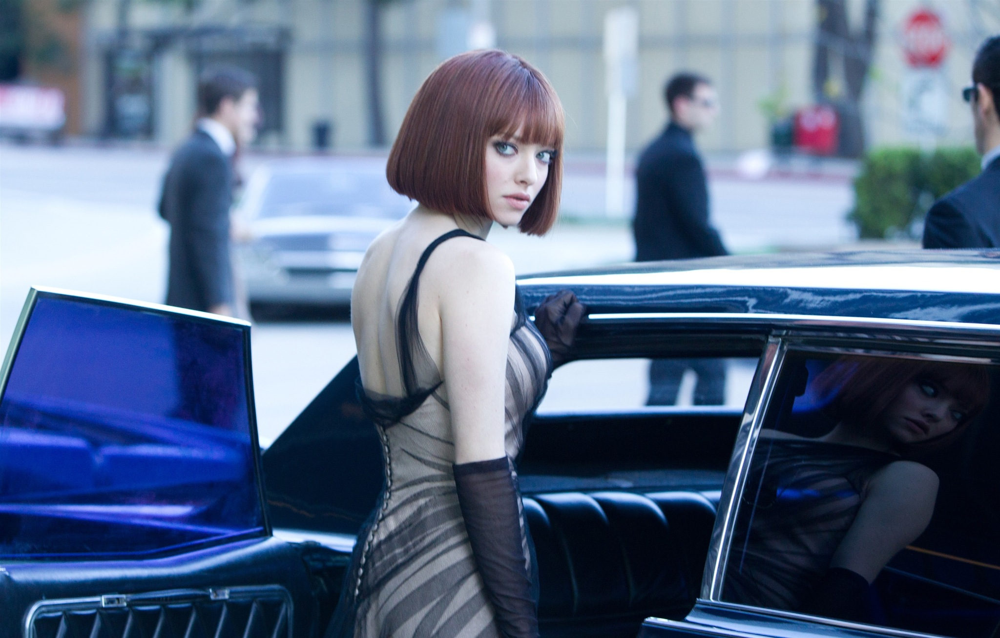
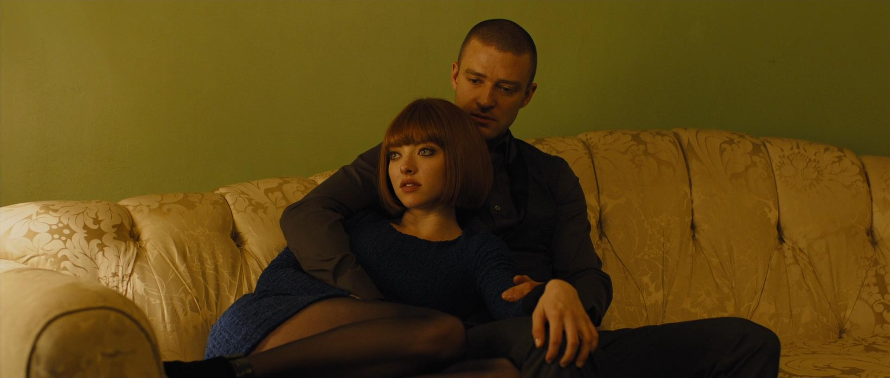

“Fikir son derece ilgi çekici; fakat film, pek çok tanıdık aksiyon unsuruna yaslanıyor.”Roger Ebert · 3/4 yıldız · serbest çeviri
Ağustos 2026 · Ayın filmi
Zamana Karşı
Yaşamak için çalıştığımız değil, çalışmak için yaşadığımız bir dünyada zaman kime aittir?
In Time · 2011
Zamana Karşı
Kulübün okuması
Filmin ana fikri yalnızca “zaman paradır” değildir: yaşam süresinin ekonomik güce dönüşmesi, eşitsizliğin nasıl doğal ve kaçınılmaz gösterildiğini açığa çıkarır. Film bize asıl olarak şunu sorar: Birinin sonsuzluğu, başkasının yarınından çalındığında özgürlük mümkün müdür?
Eleştirmen masası
Üç farklı bakış
“Çarpıcı öncül ve oyuncu kadrosu, anlatının fazla doğrudan oluşunun gölgesinde kalıyor.”Rotten Tomatoes eleştirmen uzlaşısı · serbest çeviri
“Film, eşitsizlik fikrini güçlü biçimde kuruyor; ancak ikinci yarıda bu fikrin derinliğini aksiyona bırakıyor.”Metinlerarası editör notu · eleştiri derlemesi
ZAMAN PARADIR · YAŞAM BORÇTUR · HER SANİYE BİR SEÇİMDİR · ZAMAN PARADIR · YAŞAM BORÇTUR · HER SANİYE BİR SEÇİMDİR ·
Zamanı riske atmak
Will masaya para değil, doğrudan yaşamını koyar.

Ölümsüzlerin bölgesi
Zenginlik burada gösteriş değil; tükenmeyen yarınlardır.
Konforun dışına bakmak
Sylvia, sahip olduğu zamanın başkalarının kaybı olduğunu görür.

İki ayrı dünya
Yakınlaşmaları sınıf sınırlarını silmez; görünür kılar.
SAHNE 01 · SINIR
Zaman bölgeleri
Aynı şehirde iki ayrı yaşam süresi: görünmez sınırlar, görünür eşitsizlikler.
SAHNE 02 · KAÇIŞ
Her saniye bir karar
Will ve Sylvia için hareket etmek, yalnızca kaçmak değil sistemi reddetmektir.
SAHNE 03 · ORTAKLIK
Güvenin bedeli
Zamanın satıldığı bir düzende güven, ölçülemeyen son değer olarak kalır.